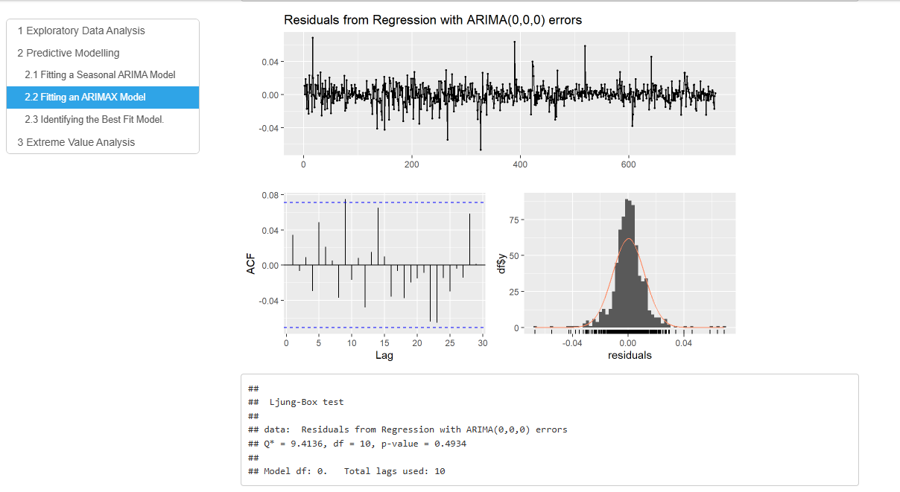
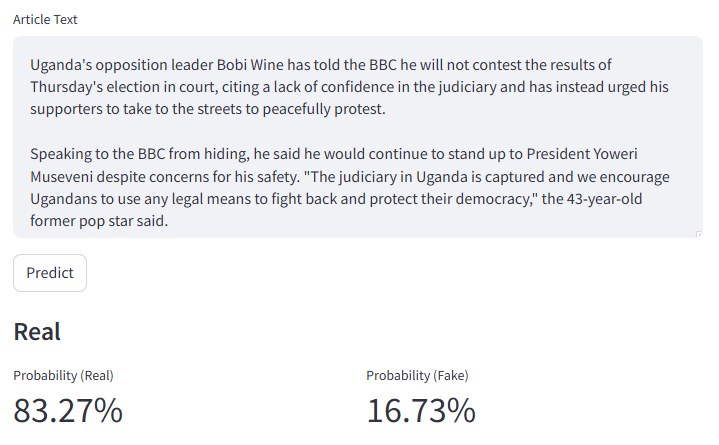
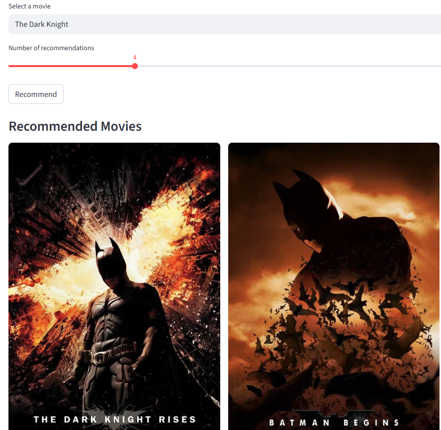
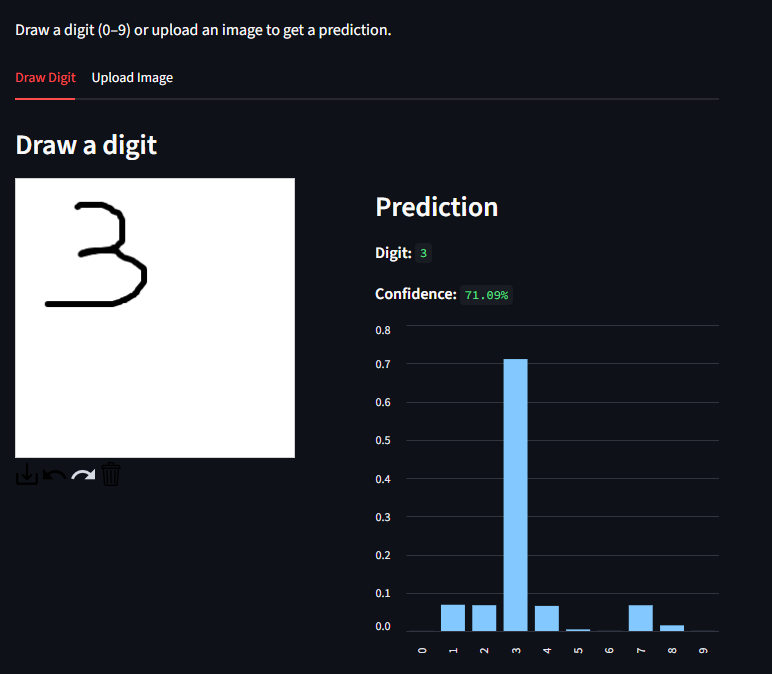

Developed an end-to-end SaaS customer churn platform using synthetic event-level data to mimic real customer behavior. Implemented a LightGBM machine learning model to predict churn probability, SHAP to explain risk factors and statistical methods (survival analysis) to estimate time-to-churn.

Built a machine learning pipeline for freight cost modeling and invoice anomaly detection using synthetic supply chain data stored in SQLite, machine learning models (Random Forest, Isolation Forest) and incorporating advanced feature engineering to capture cost dynamics.

Developed a vehicle insurance fraud detection system, combining rule-based scoring and an unsupervised machine learning model (Isolation Forest) for anomaly detection. Implemented real-time claim submission and scoring using a Streamlit dashboard, with data persisted in MongoDB.

Built an A/B testing system using experimental design and statistical modelling (hypothesis testing, power analysis) to evaluate feature performance. The system ingests metrics, applies guardrails, and outputs actionable decisions. Experiments and datasets are tracked via MLflow and DVC.

System that applies machine learning and statistical methods to analyze and forecast stock prices. Leverages Prophet-based forecasts to construct and optimize a portfolio, and integrates AI agents via Google Gemini (GenAI) to analyze market trends, company fundamentals, and portfolio metrics.

The workflow includes Data Ingestion (web scraping from Reuters and BBC, and merging multiple datasets), Data Transformation (text cleaning, TF-IDF vectorization and class imbalance handling), Machine Learning Model Training and Evaluation (Logistic Regression and ensemble classifiers)

Built a content-based system using data from TMDb (The Movie Database). Applied NLP preprocessing with NLTK, implementing similarity-based recommendation algorithms to generate suggestions ranked on predicted relevance.

Built Convolutional Neural Networks (CNNs) for image classification with data preprocessing, model tuning, and performance evaluation using accuracy and loss metrics. Implemented using Python, PyTorch, and TensorFlow to optimize model performance.